Tools tab in Vertex Paint Mode
The Vertex paint allows you to color the vertices of a mesh.
In Vertex Paint Mode you will mainly find settings for the different brushes. General settings. And brush specific settings. This settings can be found in different panels. The brush specific options and settings are explained in the tool shelf chapter. Here we just cover the general panels.
The Vertex paint Mode just exists for Mesh objects.
Brush Asset Panel
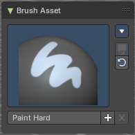
The Brush Asset Panel contains the different Brushes and some Brush settings. Choose and adjust your current active brush.
Browse Brush
The big image at the top is a dropdown box that allows you to choose a brush. Click at it, and you will see the different brushes. A click at one of the images will choose this brush then.
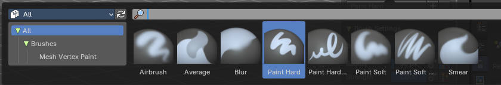
Brushes are assets. You can load them from different libraries if you want.
Brush Specials menu
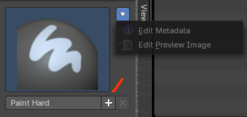
This menu becomes active when you create a new brush. Which can be done wiht the Plus button in the name property. This data cannot be changed for builtin system brushes.
Edit Metadata
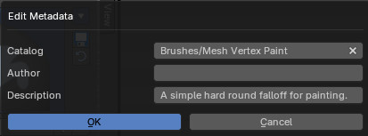
Calls a popup where you can adjust further informations and settings for the brush.
| Entry | What it does |
|---|---|
| Catalog | The asset catalog in which the brush is stored. |
| Author | The brush author. |
| Desctription | Add a description |
| OK / Cancel | Accept or decline the changes. |
| Edit Preview Image | Allows you to load a custom preview image. |
| Entry | What it does |
|---|---|
| Save Brush Asset | This button is just active with a custom brush. It saves all changes made at the brush settings into the current custom brush. |
| Revert Brush Asset | Reverts the brush settings to the default values of the brush in the asset library. |
Name
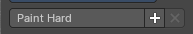
The edit box below the Image shows the name of the current active brush.
The + button allows you to add a new pencil with the current settings. Note that the brushes are NOT automatically saved when you close Bforartists. You need to save the brush asset. See above.
The X button deletes the brush from the brushes list and from the asset library. This button is just active with a custom brush. You will be prompted by a warning so that you don't accidentally remove the brush.
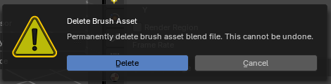
Brush Settings Panel
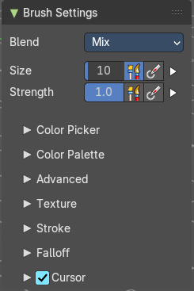
The Brush Settings Panel contains the Brush settings. The content differs, dependant of which brush you have chosen.
Blend
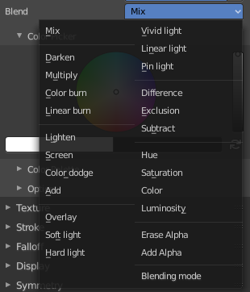
Define how the stroke will blend. You can choose between various blend modes.
| Entry | What it does |
|---|---|
| Size | The Radius edit box allows you to adjust the radius of the brush. The button behind the edit box enables tablet pressure sensitivity for radius. · Size Pressure: The first button behind the edit box enables tablet pressure sensitivity for radius. |
| Size Pressure | The first button behind the edit box enables tablet pressure sensitivity for radius. |
Pressure Size Curve
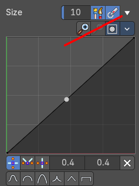
Behind the pressure size button there is a button to reveal the size pressure curve panel. When you activate Size Pressure for tablets, then the Size Pressure curve becomes active, and can be adjusted.
The pressure size curve allows you to adjust the falloff curve for the tablet pressure. It shows when Use Pressure is activated. The curve panel shows when clicking at the button.
Selecting Points
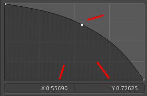
You can select curve points. This reveals two edit boxes for the x and y coordinate of this point.
Selected points can be moved around. Left click at them, hold the mouse button down and move them to a new location.
Adding Points
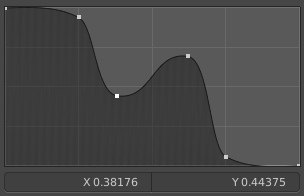
You can add new curve points by simply left clicking at the curve. Move the mouse to position them where you need it.
Navigation elements
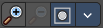
| Entry | What it does |
|---|---|
| Zoom in | Zooms in. |
| Zoom out | Zooms out. |
Clipping options
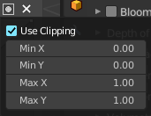
Set up clipping for the stroke.
Tools
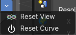
Tools is a menu where you can find some curve related tools.
| Entry | What it does |
|---|---|
| Reset View | Resets the curve windows zoom. |
| Reset Curve | Resets the curve to the initial shape. |
Handles
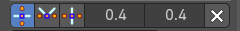
You can choose between Auto handle, Vector Handle and Auto Clamped.
Position X / Y
The position of the selectedc curve point.
Delete Points
Deletes the selected curve point.
Curve Presets
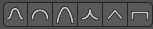
A curve preset to start with.
| Entry | What it does |
|---|---|
| Use Unified Radius | The second button behind the edit box enables global radius size. Any modification at the radius will also modify the radius value for other paint tools. |
| Strength | The Strength edit box allows you to adjust the strength of the brush. The button behind the edit box enables tablet pressure sensitivity for strength. · Size Pressure: The first button behind the edit box enables tablet pressure sensitivity for radius. |
| Size Pressure | The first button behind the edit box enables tablet pressure sensitivity for radius. |
Pressure Size Curve
Behind the pressure size button there is a button to reveal the size pressure curve panel. When you activate Size Pressure for tablets, then the Size Pressure curve becomes active, and can be adjusted.
The pressure size curve allows you to adjust the falloff curve for the tablet pressure. It shows when Use Pressure is activated. The curve panel shows when clicking at the button.
Selecting Points
You can select curve points. This reveals two edit boxes for the x and y coordinate of this point.
Selected points can be moved around. Left click at them, hold the mouse button down and move them to a new location.
Adding Points
You can add new curve points by simply left clicking at the curve. Move the mouse to position them where you need it.
Navigation elements
| Entry | What it does |
|---|---|
| Zoom in | Zooms in. |
| Zoom out | Zooms out. |
Clipping options
Set up clipping for the stroke.
Tools
Tools is a menu where you can find some curve related tools.
| Entry | What it does |
|---|---|
| Reset View | Resets the curve windows zoom. |
| Reset Curve | Resets the curve to the initial shape. |
Handles
You can choose between Auto handle, Vector Handle and Auto Clamped.
Position X / Y
The position of the selectedc curve point.
Delete Points
Deletes the selected curve point.
Curve Presets
A curve preset to start with.
Use Unified Radius
The second button behind the edit box enables global radius size. Any modification at the radius will also modify the radius value for other paint tools.
Brush Settings Panel - Color Picker Subpanel
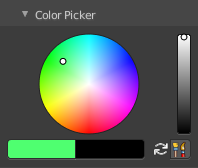
Define the color for your brush.
The active color is the left one. When you click the button with the two arrows down right then you can swap the color with the secondary color. Then this secondary color becomes the primary color, and is active.
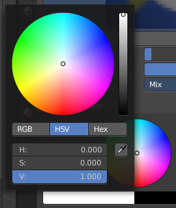
A click at one of the the color fields will open a more detailed color dialog, wSet up the color by using rgb, hsv and hex colors and with value sliders.
| Entry | What it does |
|---|---|
| Brush colors flip | Flips the primary color with the secondary color. |
| Use unified Color | Choose if you want to use global colors or local color just for vertex painting. |
Brush Settings Panel - Color Palette Subpanel
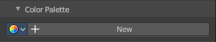
Create a color palette for later reuse.
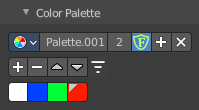
First create a new palette by clicking at New. Then adjust the color in the color picker. And then click at the add button to add this color to the palette.
To set the color picker to a palette color simply click at this palette color.
To remove a color from the palette, choose it, then click at the remove button. The active palette color that gets removed is the one with the triangle at it.
The color palette cannot be saved externally. It is part of the current blend file. You can however append color palettes from other blend files.
The currently active color is the one with the triangle at it.
The elements are explained from left to right.
Palette browser
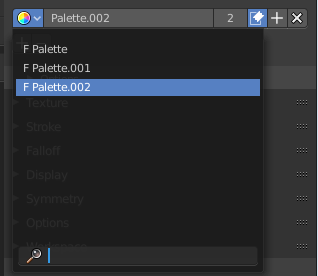
The button at the left opens a dropdown list. Choose between your palettes.
| Entry | What it does |
|---|---|
| Edit Box | The name of the currently active palette. You can also rename the palette here. A click into the edit box makes the name editable. |
| Number of users | See how many users the palette currently has. |
| Fake User | Fake User sets the element to have a fake user. Zero user data-blocks are normally not saved. But sometimes you want to force the data to be kept even when the data block has no user. |
| Add palette | Add a new palette. |
| Remove Palette | Clicking at this button removes the palette. Note that you need to save, close Bforartists and reload the blend file to remove the palette completely. |
| Add color | Adjust a color in the color picker. Then click at the add button to add this color to the palette. |
| Remove color | Select the color in the palette, then click at the minus button to remove it. |
Sort By
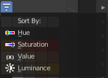
Sort the palette by the chosen method.
Brush Settings Panel - Advanced Subpanel
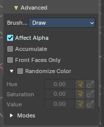
Brush specific settings.
| Entry | What it does |
|---|---|
| Brush Type | Displays the current brush type (e.g., **Draw, **Blur, Average, Smear) |
| Affect Alpha | When disabled then the alpha is locked while painting. |
| Accumulate | Accumulate stroke daubts on top of each other. |
| Front Faces Only | Paint just at faces that points forwards. Backwards pointing faces are not painted. |
Randomize Color – Subpanel
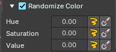
Adds variation to the brush color per stroke or while drawing a stroke.
| Entry | What it does |
|---|---|
| Slider Properties | Stroke Randomization: Use randomness per stroke, instead of while drawing a stroke. This will define a new random value when you draw a new stroke. · Use Pressure: Uses the brush pressure to define how random the influence will be. Maximum pressure is maximum randomization. |
| Hue | Shifts the base color across the color wheel. |
| Saturation | Randomize original saturation. Adjusts the intensity of the color. You need to be in color attribute mode. |
| Value | Randomize original value. Modifies the brightness of the stroke. You need to be in color attribute mode. |
Modes – Subpanel
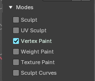
Allows to expose the brush in different modes sharing common attributes.
Example: You can make a brush for vertex mode and also texture paint mode.
Vertex Paint Mode - Texture Panel
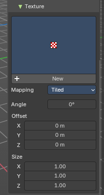
The Texture panel allows you to paint with textures. This allows you for example to grab a foto from some fish scales, and simply paint them onto the vertices by using this image as a pencil. Or as a blueprint where you calk through (Stencil method ).
Browse Texture to be linked
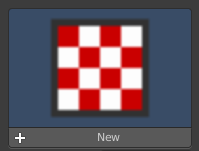
The image at the top of the panel is a image browser. Choose a texture that you can choose for vertex painting then. You can also have more than one image loaded at once.
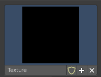
In this shot there is already a texture added. The way to add the texture here is a bit more complicated. And not done with clicking at the New button.
First click at the New button below the image. This will create a new texture slot. This slot is still empty, it displays black.
We need to load the texture in this slot. This must be done in the Properties editor in the Textures tab. And then the texture finally shows in the Texture panel in the Tool Shelf.
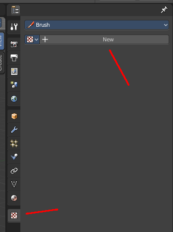
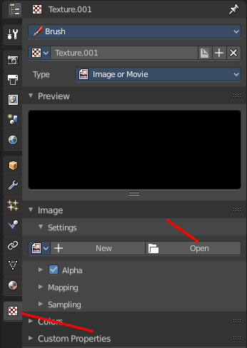
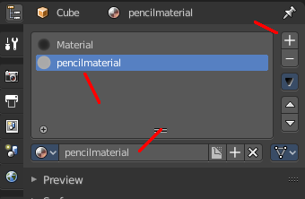
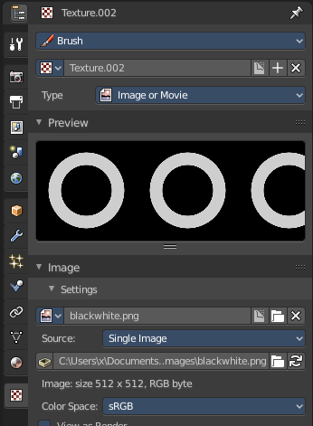
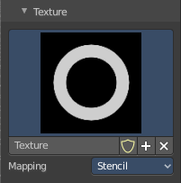
And when we switch back to the tools tab, then the texture is loaded. And we can work with this texture.
Texture Edit box
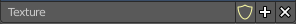
The Texture edit box is the edit box below the Image browser. When there's no image loaded then it displays the New button. When there's a image (or more) loaded, then you will see the name of the current texture.
The F button turns this texture into a data block with a fake user. Means it will exists even when there is no data connected to it anymore.
When you activate Fake User, then you may get a value in front of it, which displays how much users this data block (our texture slot) currently has.
The + Button adds another texture slot. Note that you will have to load a texture too, as explained above.
The X button deletes the texture slot.
Brush Mapping
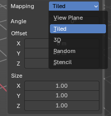
Our texture can be mapped in different methods. The Brush mapping is a drop down box. Choose this different brush mapping methods.
The settings vary. So we will go through them by the different brush mapping methods.
Brush Mapping with mapping method Tiled
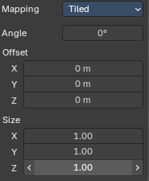
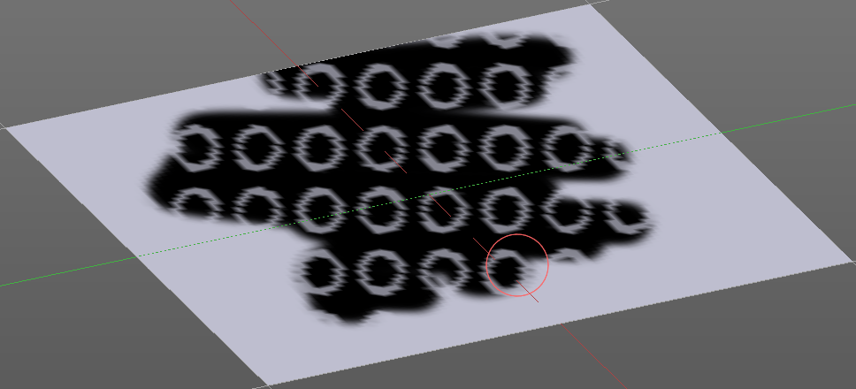
The brush mapping method Tiled tiles the brush stroke at the surface. The mapping happens from the current view. The result may be distorted when the view does not align with the surface of the object.
| Entry | What it does |
|---|---|
| Angle | The angle of the brush. |
| Offset | The offset of the texture in the brush. |
| Size | The size of the texture in the brush. |
Brush Mapping with mapping method View Plane
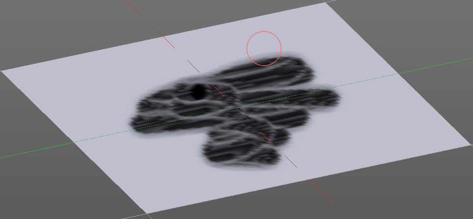
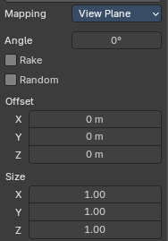
The brush mapping method View Plane simply paints onto the surface. The mapping happens from the current view. The result may be distorted when the view does not align with the surface of the object.
| Entry | What it does |
|---|---|
| Angle | The angle of the brush. |
| Rake | The angle follows the direction of the brush stroke. |
| Random | The brush angle gets set random. |
| Offset | The offset of the texture in the brush. |
| Size | The size of the texture in the brush. |
Brush Mapping with mapping method 3D
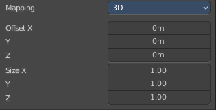
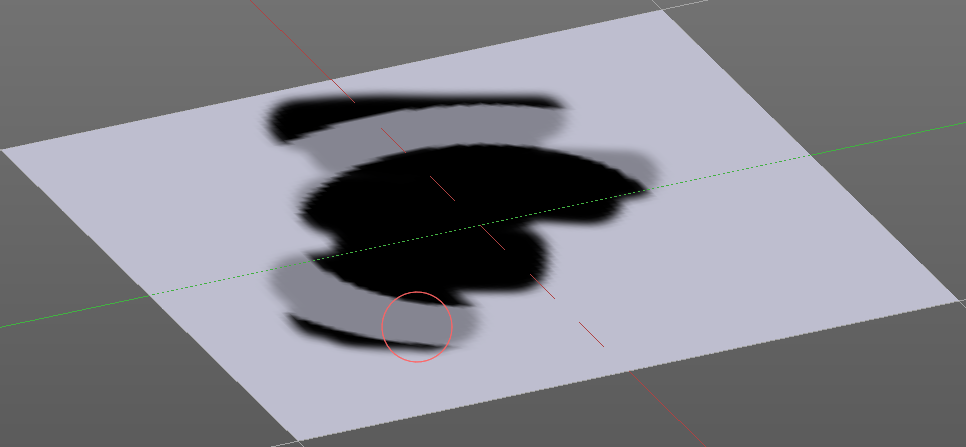
The brush mapping method 3D paints the texture at the surface, by tiling it 1/1 at the object surface.
| Entry | What it does |
|---|---|
| Offset | The offset of the texture in the brush. |
| Size | The size of the texture in the brush. |
Brush Mapping with mapping method Random
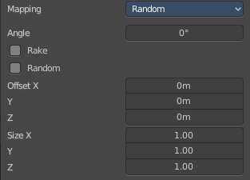
The brush mapping method Random paints onto the surface, and randomizes the texture position in the brush while that. The mapping happens from the current view. The result may be distorted when the view does not align with the surface of the object.
| Entry | What it does |
|---|---|
| Angle | The angle of the brush. |
| Rake | The angle follows the direction of the brush stroke. |
| Random | The brush angle gets set random. |
| Offset | The offset of the texture in the brush. |
| Size | The size of the texture in the brush. |
Brush Mapping with mapping method Stencil
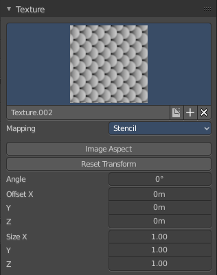
The former methods uses the textures for the brush. The method Stencil works different. You have your texture displayed in the workspace above the object, and you paint this texture onto your object with your pencil strokes.
Note that the texture in the 3d space is just visible when you are with the mouse over the viewport. It gets by default displayed down left. You have to position it where you need it. See Brush menu, Stencil Texture controls.
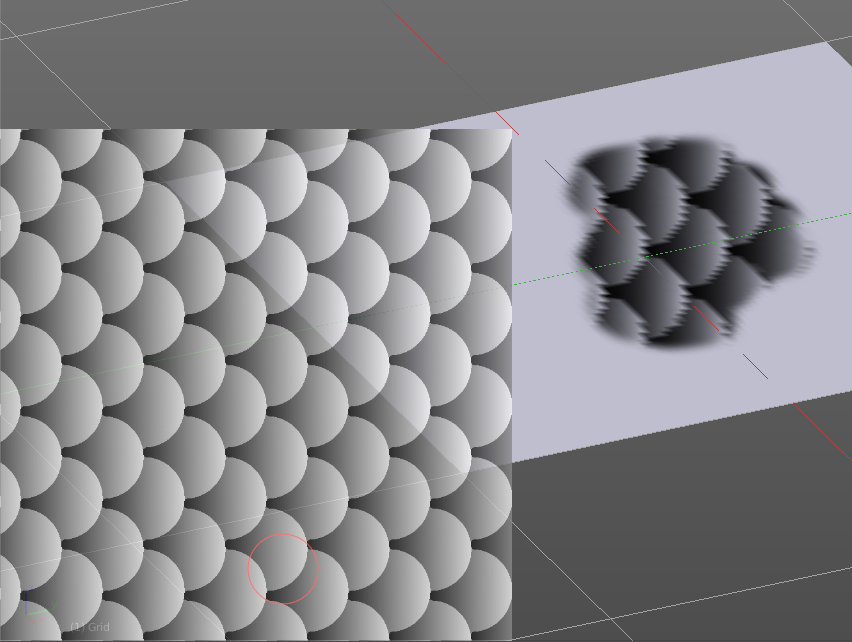
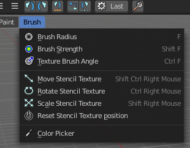
| Entry | What it does |
|---|---|
| Image Aspect | Adjust the stencil size to fit to the image aspect ratio. |
| Reset Transform | Resets all transforms. |
| Angle edit box | Adjust the angle of the brush. The button at the end allows you to set the radius by dragging the mouse. This should be done in the viewport and with the hotkey. This button is just a visible reminder. |
| Offset | Fine tune the offset of the texture in the brush. |
| Size | Fine tune the size of the texture in the brush. |
Brush Settings Panel - Stroke Sub panel
The Stroke panel contains settings to influence the behavior of the brush stroke. There are various stroke methods available. We will go through them one by one.
Stroke Panel with Stroke method Space
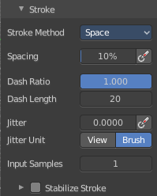
This is the default Stroke method. The sculpt stroke gets added continuously with given settings.
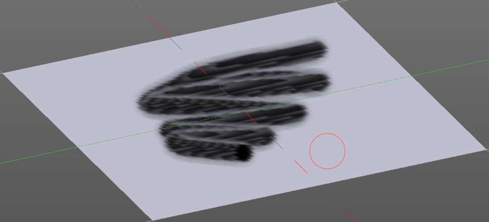
Spacing Edit Box
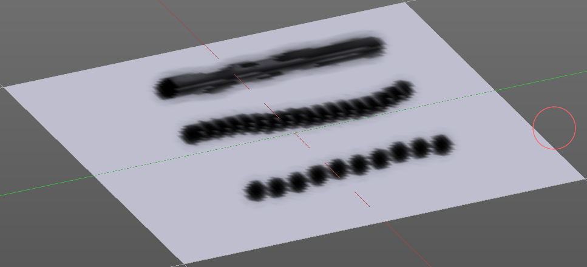
The sculpt drawing happens by mapping the pencil onto the mouse position. And when you move the mouse then the next mapping happens. Adjust the spacing after what mouse movement the next mapping should happen. The lower the value, the lower the distance between the single dots.
The icon behind the edit box enables tablet pressure sensitivity for tablets.
| Entry | What it does |
|---|---|
| Dash Ratio | Ratio of samples in a cycle that the brush is covering. |
| Dash Length | Length of a dash cycle measured in stroke samples. |
| Jitter Edit Box | Add Jitter to the brush while painting. · Spacing Pressure: The icon behind the edit box enables tablet pressure sensitivity for tablets. · Jitter Unit: Jitter in screen space, or relative to the brush size. |
| Input Samples Edit Box | Average multiple input samples together to smooth the brush stroke. |
| Stabilize Stroke | The brush lags behind the mouse position, and produces a much smoother stroke by that. The Smooth Stroke related settings are hidden as long as Smooth Stroke is not activated. · Smooth Stroke Radius Edit Box: Is just active when Smooth Stroke is activated. Adjust the radius of the smoothing. · Smooth Stroke Factor Edit Box: Is just active when Smooth Stroke is activated. Adjust the factor of the smoothing. |
Stroke Panel with Stroke method Curve
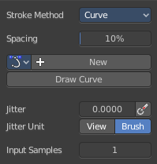
The Stroke method curve doesn't simply influence the way how the stroke is painted. It is a special method. First you draw a curve object by holding down ctrl and clicking with left mouse button. Then you tweak the curve. You can click at the curve point, and drag out handlers to make the curve points smooth.
Then you hit the Draw Curve button. And the curve gets drawn onto the surface.
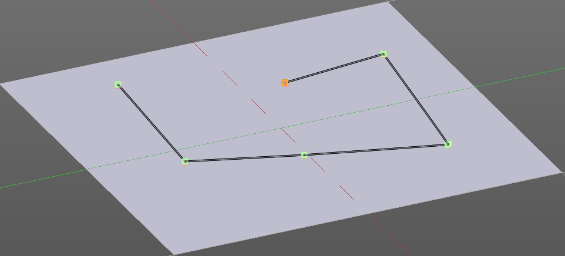
Spacing Edit Box
The drawing happens by mapping the pencil onto the mouse position. And when you move the mouse then the next mapping happens. Adjust the spacing after what mouse movement the next mapping should happen. The lower the value, the lower the distance between the single dots.
The icon behind the edit box enables tablet pressure sensitivity for tablets.
Paint Curve edit box
Here you set the active curve.
The first element is a drop down box where you will find your curves objects. You can have more than one.
The second element is the edit box that displays the active curve.
The shield icon set the brush to have a fake user. Zero user data-blocks are normally not saved. But sometimes you want to force the data to be kept even when the data block has no user.
The + button allows you to add a new pencil with the current settings. Note that the brushes are NOT saved when you close Bforartists. You can save them into the current blend file. Or you can save the startup file. But be careful here. This saves everything else of the current state of Bforartists too.
The X button deletes the brush as the active one. It does NOT delete it from the brushes list.
| Entry | What it does |
|---|---|
| Draw Curve Button | A click at it to turns the curve into a sculpt stroke. |
| Jitter Edit Box | Add Jitter to the brush while painting. · Jitter Pressure: The icon behind the edit box enables tablet pressure sensitivity for tablets. · Jitter Unit: Jitter in screen space, or relative to the brush size. |
| Input Samples Edit Box | Average multiple input samples together to smooth the brush stroke. |
Stroke Panel with Stroke method Line
With Stroke method line you draw a line between a starting point and an endpoint. And when you release the mouse then the line gets sculpted.
Spacing Edit Box
The sculpt drawing happens by mapping the pencil onto the mouse position. And when you move the mouse then the next mapping happens. Adjust the spacing after what mouse movement the next mapping should happen. The lower the value, the lower the distance between the single dots.
The icon behind the edit box enables tablet pressure sensitivity for tablets.
| Entry | What it does |
|---|---|
| Jitter Edit Box | Add Jitter to the brush while painting. · Jitter Pressure: The icon behind the edit box enables tablet pressure sensitivity for tablets. · Jitter Unit: Jitter in screen space, or relative to the brush size. |
| Input Samples Edit Box | Average multiple input samples together to smooth the brush stroke. |
Stroke Panel with Stroke method Airbrush
The stroke acts like an airbrush pencil. The dots gets placed randomly.
| Entry | What it does |
|---|---|
| Rate Edit Box | Define the rate of the drawing. |
| Jitter Edit Box | Add Jitter to the brush while painting. · Jitter Pressure: The icon behind the edit box enables tablet pressure sensitivity for tablets. · Jitter Unit: Jitter in screen space, or relative to the brush size. |
| Input Samples Edit Box | Average multiple input samples together to smooth the brush stroke. |
| Stabilize Stroke | The brush lags behind the mouse position, and produces a much smoother stroke by that. · Smooth Stroke Radius Edit Box: Is just active when Smooth Stroke is activated. Adjust the radius of the smoothing. · Smooth Stroke Factor Edit Box: Is just active when Smooth Stroke is activated. Adjust the factor of the smoothing. |
Stroke Panel with Stroke method Dots
The stroke method Dots draws dots of the pencil onto the surface. The mapping happens from the current view. Means you will get distortions when your view is not aligned with the surface of the object.
| Entry | What it does |
|---|---|
| Jitter Edit Box | Add Jitter to the brush while painting. · Jitter Pressure: The icon behind the edit box enables tablet pressure sensitivity for tablets. · Jitter Unit: Jitter in screen space, or relative to the brush size. |
| Input Samples Edit Box | Average multiple input samples together to smooth the brush stroke. |
| Smooth Stroke | The brush lags behind the mouse position, and produces a much smoother stroke by that. · Smooth Stroke Radius Edit Box: Is just active when Smooth Stroke is activated. Adjust the radius of the smoothing. · Smooth Stroke Factor Edit Box: Is just active when Smooth Stroke is activated. Adjust the factor of the smoothing. |
Brush Settings Panel - Falloff Sub panel
The curve panel allows you to define different falloffs methods for the border of the brush.
Selecting Points
You can select curve points. This reveals two edit boxes for the x and y coordinate of this point.
Selected points can be moved around. Left click at them, hold the mouse button down and move them to a new location.
Adding Points
You can add new curve points by simply left clicking at the curve. Move the mouse to position them where you need it.
Navigation elements
| Entry | What it does |
|---|---|
| Zoom in | Zooms in. |
| Zoom out | Zooms out. |
Clipping options
Set up clipping for the stroke.
Tools
Tools is a menu where you can find some curve related tools.
| Entry | What it does |
|---|---|
| Reset View | Resets the curve windows zoom. |
| Reset Curve | Resets the curve to the initial shape. |
Handles
You can choose between Auto handle, Vector Handle and Auto Clamped.
Position X / Y
The position of the selectedc curve point.
Delete Points
Deletes the selected curve point.
Curve Presets
A curve preset to start with.
Falloff Shape
Use projected or spherical falloff.
Front Face Falloff
Blend Brush influence, dependent by how much they face the front.
Angle
Adjust the angle.
Brush Settings Panel - Cursor Sub panel
Adjust the color and appearance of the brush cursor to custom values.
Cursor Checkbox
Activate the custom settings.
Cursor Color
Choose another color for the brush cursor. Double clicking at the color field will open a color picker.
Falloff Opacity
You can turn on the cursor overlay with the eye button at the end. The falloff opacity slider allows you to adjust the opacity of this cursor overlay.
| Entry | What it does |
|---|---|
| Override Overlay | Hide the Cursor Overlay when painting. |
| Use Cursor Overlay | Turn on Cursor Overlay. |
Texture Opacity
This is for the case when you paint with a texture brush. You can turn on the Texture overlay with the eye button at the end. The falloff opacity slider allows you to adjust the opacity of this cursor overlay.
| Entry | What it does |
|---|---|
| Override Overlay | Hide the Texture Overlay when painting. |
| Use Cursor Overlay | Turn on Texture Overlay. |
Symmetry Panel
Mirror
Mirror along given axis.
The same buttons plus the whole Symmetry Lock Panel as a drop down menu can also be found in the tool settings bar as icon buttons. This allows quicker access and better
Radial
Tiling. The number of times to repeat the strokes across the surface.